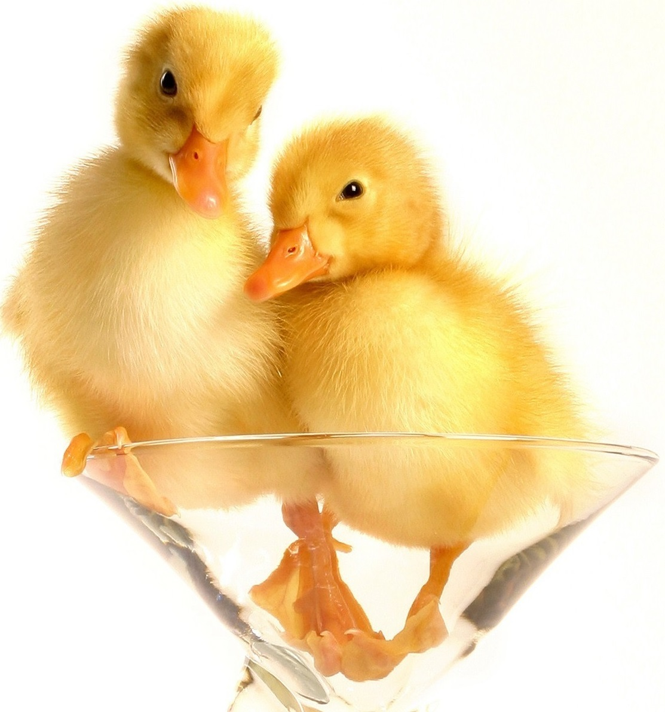

Кошки и собакиСобака - друг человека! Возможно именно по этому она является наиболее часто
встречаемым питомцем в различных семьях. Существует большое количество пород, в связи
с этим каждый может подобрать себе под любой вкус наиболее понравившегося друга. |
|
ГрызуныОдин из основных факторов, который делает из грызунов великолепных домашних животных, это минимальная забота о них. Независимо от вида, вам понадобиться клетка или резервуар для их содержания, постель, немного пищи, воды и знание основ содержания домашних грызунов. |
|
ПтицыК домашним птицам относятся куры, индейки, цесарки, утки, гуси.
Разводят птиц с целью получения яиц, мяса, пуха и пера. |
 |